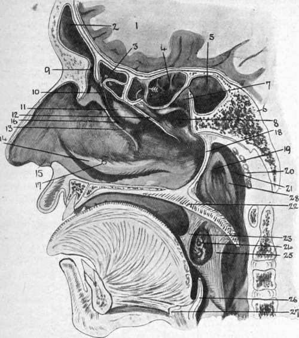

The Outer Wall of the Nose
Description
This section is from the book "Surgical Anatomy", by John A. C. MacEwen. Also available from Amazon: Surgical Anatomy.
The Outer Wall of the Nose
Extending upwards and inwards from the anterior nares to the bony apertures of the fossa are the vestibules, which are lined with skin containing numerous stout hairs and sebaceous glands. Skin and mucous membrane meet at the junction of vestibule with atrium, which latter leads particularly into the middle meatus, its upper portion leading to the superior meatus, being partially cut off by a prominence known as the agger nasi.
The nasal (Schneiderian) membrane is covered throughout by columnar ciliated epithelium, and consists of olfactory and respiratory portions. The former invests the upper portion of the cavity and both walls to the level of the centre of the middle turbinate. It is thin, of a yellow colour, and contains olfactory glands of Bowman, and olfactory cells which are directly continuous with the terminal nerve filaments of the olfactory nerve, and end in olfactory hairs. The respiratory portion is thick and more vascular, especially over the lower borders of the middle and inferior turbinates, where the tissue is practically cavernous. The portion covering the inferior turbinate is called the erectile body. On account of its vascularity the mucous membrane readily becomes congested, even in ordinary colds, causing blocking of the nose, and in long-continued cases gives rise to a hypertrophic rhinitis. The posterior end of the inferior turbinate is particularly prone to hypertrophy, and may project into the posterior nares, block the Eustachian tube, and be mistaken for a tumour. In ozcena, or atrophic rhinitis, there is a persistent purulent discharge from the nostril, the offensive nature of which is not perceived by the patient, as his sense of smell is lost. In such cases it is frequently necessary to wash out the nose. This is done by use of the nasal douche, the nozzle of which is introduced through one nostril, while the patient keeps the mouth wide open. The palate then arches up and shuts off the cavity of the nose from the pharynx, and so the fluid runs up one nostril, turns posteriorly, and comes down the other.
Nasal polypi are generally myxomatous, covered with columnar ciliated epithelium, and grow from the lower border of the middle turbinate. Malignant tumours are generally sarcomatous, and often spring from the base of the skull, from whence they invade the nasal cavities, distending them and giving the patient a 'frog face.'
The blood-supply is derived from the spheno-palatine branch of the internal maxillary artery, which enters the fossa posteriorly through the spheno-palatine foramen and supplies the outer wall and septum, and also from the ethmoidal branches of the ophthalmic and small branches of the superior coronary of the facial and of the descending palatine of the internal maxillary. The veins carry the blood forwards to the facial, backwards to the spheno-palatine, and upwards to the ethmoidal veins. These latter are very important, as they communicate with the veins of the dura and of the brain itself, as is likewise an inconstant communicating vein which runs from the nose through the foramen caecum to the superior longitudinal sinus.
The lymphatics lead chiefly to the deep cervical glands, so that retropharyngeal abscess may arise from septic infection of the nose, but those from the olfactory region communicate with the subarachnoid space. Thus, both through the venous and lymphatic channels mischief may reach the brain from the nose.
Bleeding from the-nose, or epistaxis, may be very troublesome and profuse, and even fatal. The fact that it is sometimes checked by holding the hands above the head is supposed to be due to the increased suction action of the chest lessening the venous congestion.
Beyond the atrium the outer wall is complicated by the turbinal bones, the two upper of which belong to the ethmoid, while the inferior is a separate bone. These bones project inwards and downwards from the outer wall toward the septum, which, however, they do not touch, a space intervening, through which part of the inspired air passes. They are curled on themselves, so that their free margins are directed outwards. They each, therefore, roof over a meatus, which is named from the bone which forms its roof. The superior turbinal is the smallest, extending forward to about the centre of the cribriform ; the middle turbinal extends forward to the level of the anterior end of the cribriform ; while the inferior extends anteriorly to within ¾ inch of the anterior nares and posteriorly to within 3/8 inch of the Eustachian tube.
If these bones be removed, the meati can be examined. The superior meatus is very small, and presents apertures leading into the posterior ethmoidal cells. The middle meatus presents anteriorly a thin grooved ridge of bone, curving downwards and backwards. This is the uncinate process of the ethmoid, and it is separated from the bulla ethmoidalis (a rounded prominence containing some ethmoidal cells which lies posteriorly and above the uncinate process) by a deep groove, the hiatus semilunaris. This hiatus opens along its outer surface into the infundibulum, which has the same boundaries and with which it runs parallel. At its upper and anterior extremity the infundibulum generally receives the fronto-nasal duct leading from the frontal sinus and the ostia of the anterior ethmoidal cells. At its lower end, beneath the bulla, and concealed by the uncinate process, the ostium of the maxillary sinus opens into it. One or two small apertures above the bulla lead to the middle ethmoidal cells. The bulla sometimes hypertrophies, presses the middle turbinal against the septum, which may yield, thus leading to considerable blockage of the nose. The middle meatus has a wide anterior opening, which favours the passage of inspired air along it, and in passing an instrument into the nose, unless care be taken to keep its point on the nasal floor, it is very apt to pass into the middle fossa. The inferior meatus has a curved roof, the highest point being at the junction of its anterior and middle thirds. At this point also the outer wall frequently bulges into the antrum, thus increasing the size of the meatus. Here the nasal duct opens by a narrow slit close to the meatal roof, ¾ inch above the floor. This height of the meatus should be kept in mind in introducing a Eustachian catheter, which might not pass if too much curved. The floor, composed of the palatal processes of the superior maxillary and palate bones, is over 1/2 inch in width, is smooth, slightly concave from side to side, and slopes gently downwards and backwards. It is frequently necessary to plug the posterior nares in cases of bleeding. This is done by passing a loop of stout thread by means of a special sound or ordinary catheter through the nose to the pharynx, where it is caught from the mouth and drawn forwards. A plug of a size to fit the posterior nares, which measure about 1¼ inches vertically and ½ inch transversely, is then ftxed to the loop, by which it is drawn up into the nares. The ends are then tied to another plug applied over the nostril. It is well to attach a single thread to the plug for the posterior nares before pulling it into position, by which it may be withdrawn when done with. The nasal cavities may be explored by passing one finger up the nostril and another through the mouth, and polypi may sometimes be so removed. Where it is necessary to get a full view of the nares an almost median dorsal vertical incision may be made through the nostril (Kocher), or the upper lip may be everted, mucous membrane incised, and soft parts shelled up (Rouge). An ordinary examination may be made by introducing a speculum, elevating the nostril and tip of the nose, and using a forehead mirror. The posterior nares may be inspected by posterior rhinoscopy, using the forehead mirror and a small laryngeal mirror introduced through the mouth behind the soft palate. Foreign bodies are not infrequently found in the nose, some of which may have lodged there for many years, and these sometimes form the nucleus for a deposition of calcareous matter, such masses being called rhinoliths. The olfactory nerve supplies the upper or olfactory portion of the nose, and, as little air passes through this portion in ordinary respiration, it is usual to sniff when endeavouring to perceive an odour. The loss of ability to dilate the nostril, as in sniffing, may explain the partial loss of smell in facial paralysis. As already explained, the relationship of the nerve supply of the eye and nose derived from the ophthalmic of the fifth is very close. Thus, when the nose is irritated the eye waters, as in taking snuff, and when the eye is exposed to bright sunlight sneezing is sometimes produced. In nasal obstruction, not merely is respiration interfered with, but the voice is altered, and smell and taste suffer, while a form of asthma also sometimes develops. This asthma is probably due to a reflex from the fifth along fibres of the vagus derived from the fifth, and is generally cured on removal of the nasal obstruction.
Fig. 9.- Diagram of Nasal Cavity, etc. (-Modified from Turner, etc.)
I | Brain (frontal lobe). | 12. | Cut edge of middle turbinal bone. | 20. | Pharyngeal tonsil. |
2. | Frontal sinus. | 21. | Lateral recess, or fossa of Rosenmüller. | ||
3· | Ant. ethmoidal cells. | Processus uncinatus. | |||
4· | Post, ethmoidal cells. | 14. | Inferior turbinate bone. | 22. | Palate. |
5· | Sphenoidal sinus. | 15. | Vestibule. | 23· | Ant. pillar of fauces. |
6. | Sphenoid bone. | 16. | Hiatus semilunaris. | 24. | Tonsil. |
7· | Spheno-ethmoid recess. | ι?· | Position of orifice of nasal duct. | 25· | Post, pillar of fauces. |
8. | Superior meatus. | 26. | Epiglottis. | ||
9· | Fronto-nasal duct. | 18. | Posterior edge of nasal septum. | 27. | Hyoid bone. |
ΙΟ. | Infundibulum. | 28. | Salpingo-pharyngeal fold. | ||
II. | Ethmoidal bulla. | 19. | Orifice of Eustachian tube. |
Continue to:
- prev: The Nose
- Table of Contents
- next: The Accessory Sinuses